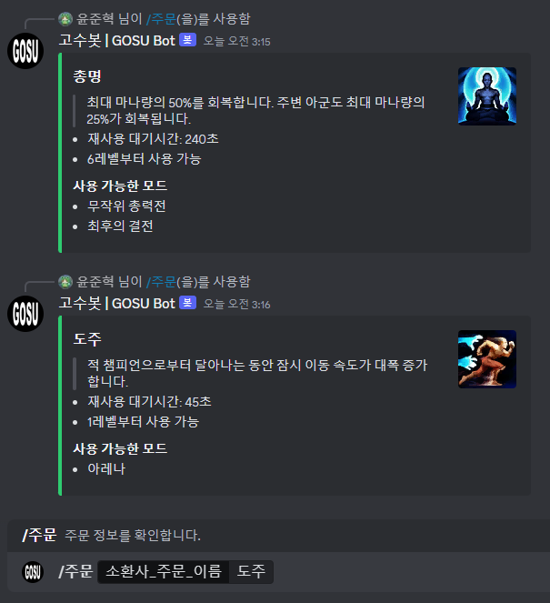
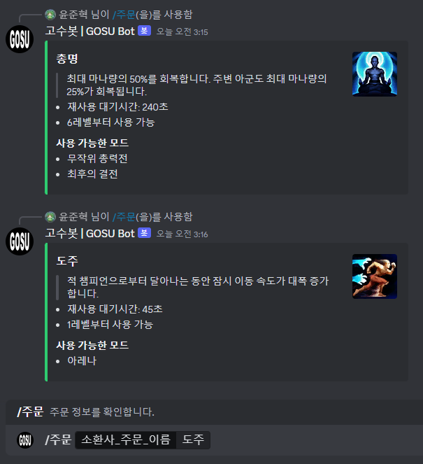

소개
고수봇 | GOSU Bot은 게임 '리그 오브 레전드'의 정보 봇입니다.
기능
/챔피언 /champion
- 사용법(한): /챔피언 [챔피언_이름]
- 사용법(영): /champion [champion_name]
사용 예시:
- /챔피언 [챔피언 이름: 이즈리얼]
- /챔피언 [챔피언 이름: ㅇㅈㄹㅇ]
- /champion [champion_name: ezreal]
챔피언 정보를 불러옵니다.
해당 챔피언의 역할군, AD/AP 비율, 난이도, 기본 스탯, 팁, 각 스킬에 대한 설명, 챔피언 스킨 일러스트를 확인할 수 있습니다.
참고: 한국어의 경우 [챔피언_이름]은 초성으로 입력할 수 있습니다.
해당 챔피언의 역할군, AD/AP 비율, 난이도, 기본 스탯, 팁, 각 스킬에 대한 설명, 챔피언 스킨 일러스트를 확인할 수 있습니다.
참고: 한국어의 경우 [챔피언_이름]은 초성으로 입력할 수 있습니다.
/주문 /spell
- 사용법(한): /주문 [주문_이름]
- 사용법(영): /spell [spell_name]
사용 예시:
- /주문 [주문_이름: 유체화]
- /spell [spell_name: Ghost]
소환사 주문 정보를 불러옵니다.
해당 소환사 주문의 설명, 재사용 대기시간, 사용 가능한 모드를 확인할 수 있습니다.

해당 소환사 주문의 설명, 재사용 대기시간, 사용 가능한 모드를 확인할 수 있습니다.

/소환사 /summoner
이 명령어는 아직 사용할 수 없습니다. 아래 설명되어 있는 내용은 프로토타입을 기준으로 합니다.- 사용법(한): /소환사 [플레이어_이름] [태그] (서버)
- 사용법(영): /summoner [username] [tag] (server)
사용 예시:
- /소환사 [플레이어_이름: Hide on bush] [태그: KR1]
- /소환사 [플레이어_이름: Hide on bush] [태그: KR1] (서버: [KR] 대한민국)
- /summoner [username: 1T1T1T1T1T1] [태그: NA1] (서버: [NA] North America)
소환사 프로필을 확인합니다.
소환사의 닉네임, 레벨, 마지막 플레이, 솔랭&자랭 티어를 확인할 수 있습니다.
참고: (서버) 매개변수는 입력이 없을 경우 '[KR] 대한민국'으로 취급합니다.
소환사의 닉네임, 레벨, 마지막 플레이, 솔랭&자랭 티어를 확인할 수 있습니다.
참고: (서버) 매개변수는 입력이 없을 경우 '[KR] 대한민국'으로 취급합니다.
/서버상태 /status
이 명령어는 아직 사용할 수 없습니다. 아래 설명되어 있는 내용은 프로토타입을 기준으로 합니다.- 사용법(한): /서버상태 [서버]
- 사용법(영): /status [server]
사용 예시:
- /서버상태 [서버: [KR] 대한민국]
LoL 서버 서비스 상태 정보를 확인합니다.
업데이트 내역
v0.1.0 업데이트
- 2024년 1월 2일
/spell 명령어 추가
초기 릴리즈
- 2024년 1월 1일